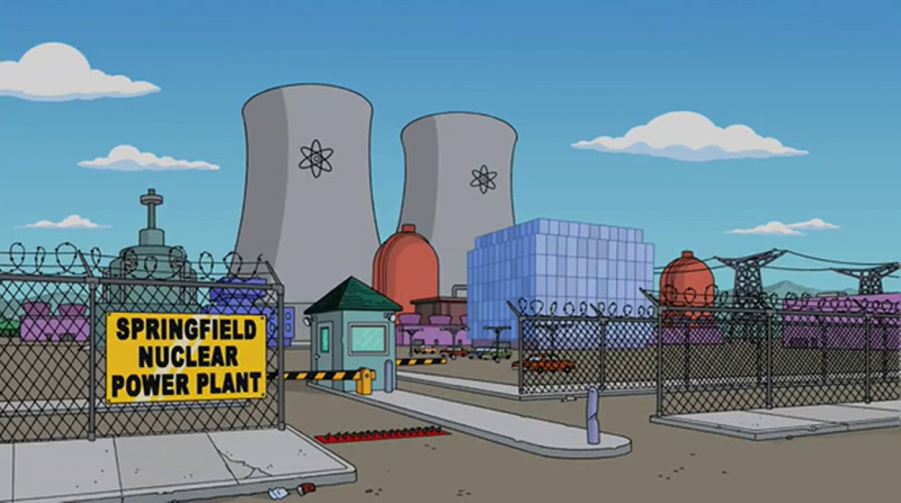

Basics behind nuclear reactor
The basics behind nuclear fission found in commerical nuclear power plants.
Learn more.png)
Civil nuclear energy production has been on the decline throughout Europe, with countries like Germany completely phasing out their nuclear reactors in 2023. However, recently in the UK, the government has started to look into building new, smaller nuclear reactors across the country. In addition, France has scrapped their previous aim to reduce nuclear energy reliance from 70% of their energy production to 50% in 2023. So the question is, why are European countries so divided over nuclear energy?

One of the biggest issues Nuclear energy has faced is public perception. The word nuclear has become interlinked with apocalyptic explosions or dangerous green radiation, as seen in The Simpsons. In the UK, 41% of the population opposes local nuclear power plants, whilst only 21% support local nuclear power plants. The primary reason for opposition was due to concerns about the safety and security of the local area, with 80% of those opposed listing this as a primary factor. Others focused their concerns on the impact on local plant and animal life.
With the UK government looking to expand nuclear energy, it is important for us to gain a better understanding of nuclear energy. Below we outline some commonly asked questions and address misunderstandings that arise from incorrect use of physics.
Below are three topics which outline the basics of a nuclear reactor, different safeguards inplace and common misconceptions of nuclear power.
The basics behind nuclear fission found in commerical nuclear power plants.
Learn moreAddressing a few common misconceptions of nuclear power industry.
Learn moreA look into some of the safeguards put in place which the general public may not be aware of.
Learn more